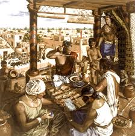

Motivations for Traveling to India in Ancient Times
India, with its rich cultural, economic, and religious significance, attracted travelers from various parts of the world in ancient times. Here are the key motivations behind their journeys:
- Trade and Commerce: India was renowned for its spices, textiles (such as cotton and silk), precious stones, ivory, and other luxury goods. The Indian subcontinent became a hub for the ancient global trade network, including the famous Silk Road and maritime trade routes.
- Religious Pilgrimages: India has always been a land of diverse religions. Many travelers, including Buddhists, Hindus, and Jains, visited India to seek spiritual enlightenment, visit sacred sites, and learn from revered teachers. Buddhist monks, such as Xuanzang, traveled to India to study at famous centers like Nalanda University.
- Cultural Exchange: India was a melting pot of diverse cultures, languages, and artistic traditions. Scholars, artists, and intellectuals traveled to India to exchange knowledge in philosophy, mathematics, astronomy, and the arts.
- Scientific Knowledge: Ancient India was a center of scientific and mathematical advancements. Travelers came to study India's unique contributions in areas such as mathematics (e.g., the concept of zero), medicine (Ayurveda), and astronomy (e.g., Aryabhata's work).
- Political Alliances: Rulers and kings from neighboring regions and distant lands often traveled to India to form alliances through diplomacy, marriages, or military campaigns. India’s wealth, strategic location, and powerful kingdoms made it a key player in regional politics.
- Natural Resources: The availability of rich natural resources such as precious metals (gold, silver), gemstones (diamonds, sapphires), and fine wood attracted merchants and foreign explorers.
- Exploration and Curiosity: Some travelers, like the Greeks and Romans, were curious about the exotic lands to the east. Explorers such as Alexander the Great ventured into India to witness its ancient civilizations firsthand.
- Health and Healing: Ancient India's medicinal practices, particularly Ayurveda, attracted travelers seeking cures for ailments and better health practices that were not available in their home regions.
- Fame and Prestige: India’s reputation for wealth, opulence, and cultural achievements led foreign travelers to visit in search of fame and glory by associating with its powerful rulers and learning from its rich traditions.

Ancient Traders and Pilgrims in India
Routes to India in Ancient Times
India’s favorable geographical location at the crossroads of Central Asia, the Middle East, and Southeast Asia made it a prime destination for travelers. The following routes were commonly used to reach India:
- Silk Road (Land Route): The famous Silk Road connected China, Central Asia, and India. Traders and scholars traveled overland through regions like Persia, the Central Asian steppes, and the Indian subcontinent. The Silk Road facilitated the exchange of goods like silk, spices, and cultural knowledge.
- Maritime Routes (Sea Routes): The Indian Ocean was a major trade route for merchants from Southeast Asia, the Arabian Peninsula, and Africa. Ships sailed from ports like Alexandria (Egypt), Oman, and Southeast Asia to India's western coast (e.g., Gujarat, Malabar) and eastern ports like Bengal. These routes facilitated the exchange of spices, textiles, and ideas.
- Persian Gulf Route: The Persian Gulf served as a key entry point for merchants from the Arabian Peninsula and beyond. This route connected India’s western coast to the Arabian Peninsula, facilitating trade and diplomatic relations with Persian and Mesopotamian civilizations.
- Routes from Southeast Asia: Travelers from Southeast Asia, especially from countries like Indonesia, Malaysia, and Thailand, journeyed to India by sea. They were primarily driven by religious motives (Buddhism and Hinduism), but also by trade interests.
- Alexander’s Route (Greek Influence): The Greek invasion under Alexander the Great in the 4th century BCE opened the northwestern route to India. This route through Afghanistan and the Indus Valley became a strategic gateway for the Hellenistic world to reach India.
.png)
Ancient Trade Routes to India
Favorable Geographical Features of India
India's geographical features made it an attractive destination for travelers. The country's location and natural features played a crucial role in making it a central hub for ancient trade, cultural exchanges, and political influence. Some of the key geographical advantages include:
- Strategic Location: India’s location at the crossroads of Asia and the Indian Ocean connected it to major civilizations of the ancient world. This made it an important center for both land and sea trade routes.
- Natural Harbors: India’s western and eastern coasts, with natural harbors like those in Gujarat, Kerala, and Bengal, facilitated maritime trade with Africa, the Arabian Peninsula, and Southeast Asia.
- Rich River Systems: Rivers like the Ganges, Indus, and Brahmaputra provided fertile lands for agriculture and were key to transportation and communication. These rivers helped connect the interior of India to trade routes.
- Diverse Climate and Resources: India’s varied climate and geography supported a wide range of agricultural products, precious minerals, and natural resources, which attracted merchants and explorers looking for exotic goods.
- Mountain Ranges: The Himalayas to the north provided natural protection and also served as routes for migration and the spread of culture, especially through the northwestern passes like the Khyber Pass.

Geographical Features of India: A Natural Gateway